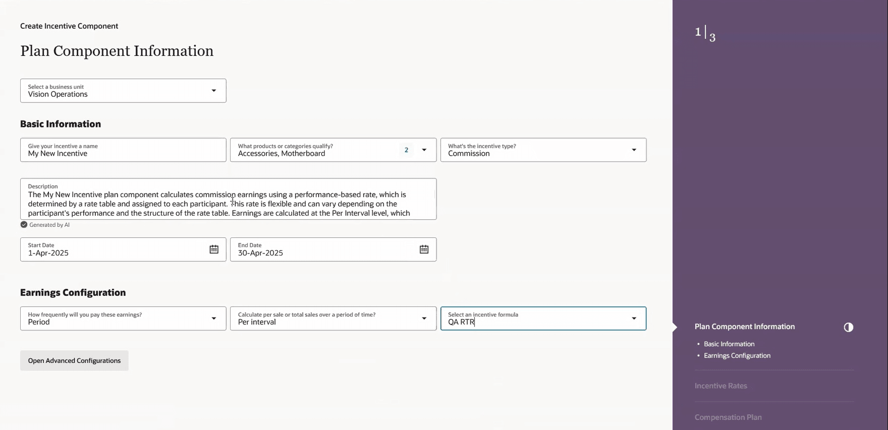
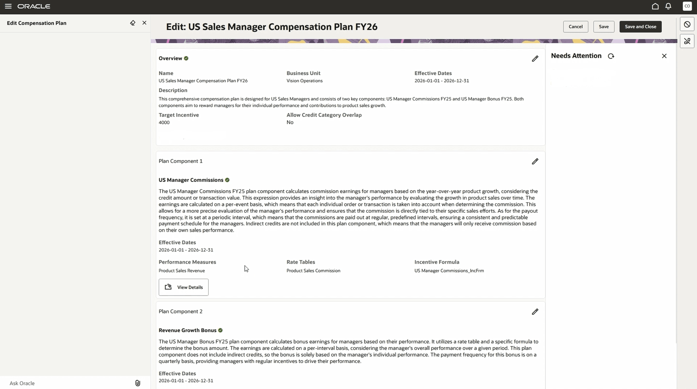
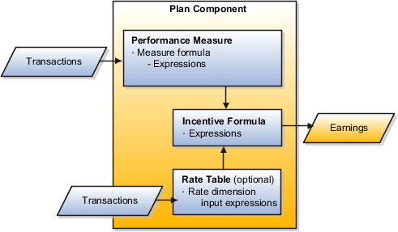
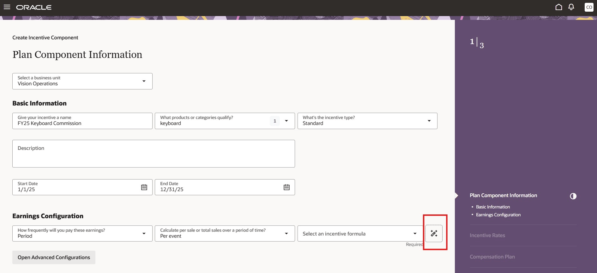
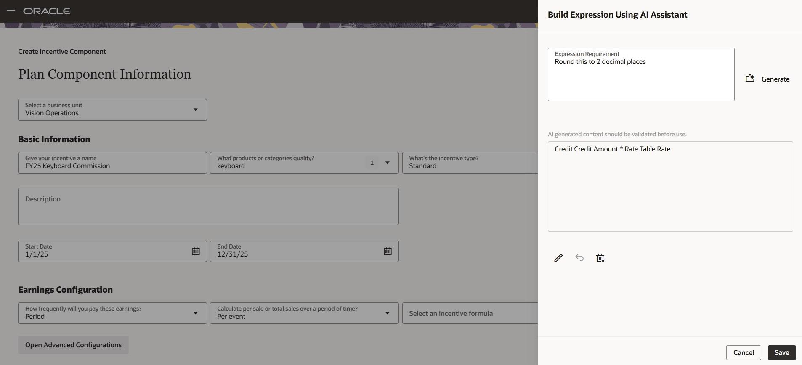
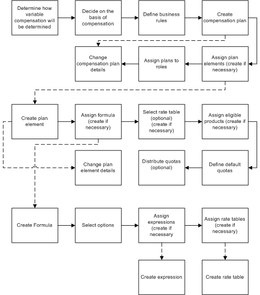

1. Plan components (modern Redwood UI)

Real UI — "Create Incentive Component → Plan Component Information" (step 1/3): business unit, product, incentive type, an AI-generated description ("Generated by AI" badge), start/end dates, Payout Frequency, Per interval, and an incentive-formula picker with "Open Advanced Configurations"; right rail shows Incentive Rates / Compensation Plan stages.
26C Plan Builder: "Edit: US Sales Manager Compensation Plan FY26" — Overview (target incentive, credit-category overlap); Plan Component blocks each listing Performance Measures, Rate Tables, and Incentive Formula (e.g.US Manager Commissions_IncFrm), View Details, and a "Needs Attention" assistant rail.
2. Expressions — the formula editor

Oracle's own diagram: expressions appear in measure formulas, incentive formulas, and as input expressions for rate tables.Expressions are created in the Compensation Plans work area with the Expression Builder (Manage Expressions). Attributes are addressed as table.column — e.g. Credit.Credit Amount. Predefined functions are PL/SQL functions inserted from the builder.
Attainment (measure formula): SUM(Credit.Credit Amount)
Rate dimension input: Measure.ITD Output Achieved
Earnings (incentive formula): Measure.ITD Output Achieved * RTR -- RTR = Rate Table Result
Quota attainment example: SUM(Credits.Credit Amount / Measure.Interval Target)

26A: Gen AI sparkle icon (outlined) next to "Select an incentive formula" in the component wizard.
"Build Expression Using AI Assistant": requirement "Round this to 2 decimal places" → generated expressionCredit.Credit Amount * Rate Table Rate, with edit/undo/delete controls.
Editor details: a Label field adds comments that render SQL-style in the Formatted tab (e.g.
SUM /* Attainment when type - Revenue */). Invalid expressions show status Invalid with a View Log link (and Validate Expression under Credits and Earnings > View Process Logs).3. Predefined functions (PL/SQL)
Added via the expression builder; examples: Credit Category Name (rate lookup by credit category), Date Difference, Previous Interval Attainment (growth payouts), Product Name, Prorated Measure Participation, Prorated Plan Component Participation, Rank Participant Metrics (RANK / DENSE_RANK over measures/earnings), Accumulate by Any Interval, Rolling Average Attainment (e.g. 4-interval rolling), YTD Target Incentive (true-ups).
User-defined queries need value-set aggregates: SUM_VALUE_SET ( UDQ 1 () ) plus COUNT/MAX/MIN/AVG/COUNT_DISTINCT variants — otherwise the earnings calculation fails. Logic uses CHOICE, IS_GREATER, IS_EQUAL, IS_NULL.

Classic Fusion UI (legacy docs): Create Compensation Plan page — before Redwood.